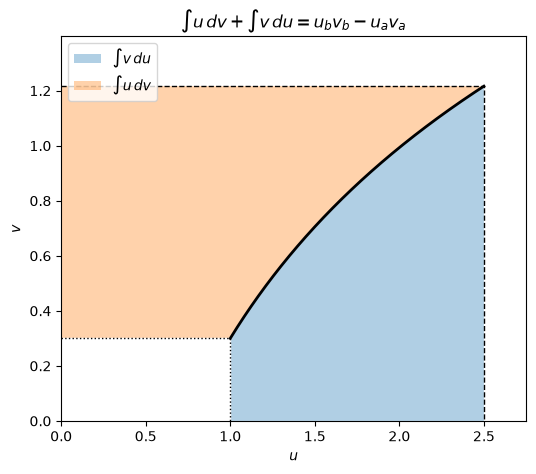

Code
import numpy as np
import sympy as sp
import matplotlib.pyplot as plt
from IPython.display import Math, display
sp.init_printing()
x, n = sp.symbols("x n")Miraj Samarakkody
October 15, 2026
Stewart, Calculus, §7.1
Learning objectives. By the end of this lecture you should be able to: 1. Derive the integration by parts formula from the Product Rule. 2. Choose \(u\) and \(dv\) well (the LIATE heuristic). 3. Handle repeated, cyclic, and definite integrals by parts. 4. Derive and use reduction formulas. 5. Check every answer symbolically with SymPy and numerically with NumPy.
Every differentiation rule gives an integration rule. The Substitution Rule comes from the Chain Rule; integration by parts comes from the Product Rule: \[\frac{d}{dx}\big[f(x)\,g(x)\big] = f(x)\,g'(x) + g(x)\,f'(x).\]
Integrate both sides: \[f(x)\,g(x) = \int f(x)\,g'(x)\,dx + \int g(x)\,f'(x)\,dx,\]
and rearrange: \[\boxed{\int f(x)\,g'(x)\,dx = f(x)\,g(x) - \int g(x)\,f'(x)\,dx}\]
With \(u = f(x)\) and \(v = g(x)\), so \(du = f'(x)\,dx\) and \(dv = g'(x)\,dx\): \[\boxed{\int u\,dv = uv - \int v\,du}\]
Definite version (combine with the Fundamental Theorem of Calculus): \[\int_a^b f(x)\,g'(x)\,dx = \Big[f(x)\,g(x)\Big]_a^b - \int_a^b g(x)\,f'(x)\,dx\]
The idea: swap an integral we can’t do, \(\int u\,dv\), for one we hopefully can, \(\int v\,du\).
Let’s check the Product Rule identity with SymPy for general functions \(f\) and \(g\):
There are two requirements: - \(dv\) must be something you can integrate to get \(v\). - \(\int v\,du\) should be simpler than the original integral. Usually that means \(u\) gets simpler when differentiated.
LIATE heuristic: choose \(u\) as the function that appears first in this list:
| Type | Examples | |
|---|---|---|
| L | Logarithmic | \(\ln x\), \(\log_2 x\) |
| I | Inverse trigonometric | \(\tan^{-1}x\), \(\sin^{-1}x\) |
| A | Algebraic | \(x\), \(x^2\), \(3x^5 - 1\) |
| T | Trigonometric | \(\sin x\), \(\cos 3x\) |
| E | Exponential | \(e^x\), \(2^x\) |
Everything that is left (including \(dx\)) becomes \(dv\).
The function below does one step of integration by parts. Given \(u\) and \(dv\), it returns \(uv\) and the new integrand \(v\,du\), so we can follow each step the same way we would by hand.
def by_parts(u, dv, var=x, show=True):
# One step of integration by parts: returns (uv, v*du/dx)
du = sp.diff(u, var)
v = sp.integrate(dv, var) # constant of integration omitted (any v works)
if show:
display(Math(
rf"u = {sp.latex(u)},\quad dv = {sp.latex(dv)}\,d{var}"
rf"\qquad\Longrightarrow\qquad du = {sp.latex(du)}\,d{var},\quad v = {sp.latex(v)}"
))
display(Math(
rf"\int {sp.latex(u * dv)}\,d{var} = {sp.latex(u * v)} - \int {sp.latex(sp.simplify(v * du))}\,d{var}"
))
return u * v, sp.simplify(v * du)
def check(F, integrand, var=x):
# Verify F' = integrand symbolically
ok = sp.simplify(sp.diff(F, var) - integrand) == 0
print("d/dx(answer) == integrand:", ok)
return okBy hand. LIATE says Algebraic (\(x\)) comes before Trig (\(\sin x\)): \[u = x,\quad dv = \sin x\,dx \quad\Longrightarrow\quad du = dx,\quad v = -\cos x.\] \[\int x\sin x\,dx = -x\cos x - \int(-\cos x)\,dx = -x\cos x + \sin x + C.\]
With SymPy:
\(\displaystyle u = x,\quad dv = \sin{\left(x \right)}\,dx\qquad\Longrightarrow\qquad du = 1\,dx,\quad v = - \cos{\left(x \right)}\)
\(\displaystyle \int x \sin{\left(x \right)}\,dx = - x \cos{\left(x \right)} - \int - \cos{\left(x \right)}\,dx\)
\(\displaystyle \int x\sin x\,dx = - x \cos{\left(x \right)} + \sin{\left(x \right)} + C\)
d/dx(answer) == integrand: TrueWhat if we choose badly? Take \(u = \sin x\) and \(dv = x\,dx\). Then \(v = x^2/2\) and the new integral \(\int \tfrac{x^2}{2}\cos x\,dx\) is harder, because the power of \(x\) went up.
\(\displaystyle u = \sin{\left(x \right)},\quad dv = x\,dx\qquad\Longrightarrow\qquad du = \cos{\left(x \right)}\,dx,\quad v = \frac{x^{2}}{2}\)
\(\displaystyle \int x \sin{\left(x \right)}\,dx = \frac{x^{2} \sin{\left(x \right)}}{2} - \int \frac{x^{2} \cos{\left(x \right)}}{2}\,dx\)
There is only one function here, so take \(u = \ln x\) and \(dv = dx\): \[du = \frac{1}{x}\,dx,\qquad v = x.\] \[\int \ln x\,dx = x\ln x - \int x\cdot\frac{1}{x}\,dx = x\ln x - x + C.\]
The same trick works for \(\tan^{-1}x\), \(\sin^{-1}x\), and \((\ln x)^2\).
\(\displaystyle u = \log{\left(x \right)},\quad dv = 1\,dx\qquad\Longrightarrow\qquad du = \frac{1}{x}\,dx,\quad v = x\)
\(\displaystyle \int \log{\left(x \right)}\,dx = x \log{\left(x \right)} - \int 1\,dx\)
\(\displaystyle \int \ln x\,dx = x \log{\left(x \right)} - x + C\)
d/dx(answer) == integrand: TrueTake \(u = x^2\) and \(dv = e^x\,dx\): \[\int x^2e^x\,dx = x^2e^x - 2\int xe^x\,dx.\] The power of \(x\) went down by one, so apply parts again with \(u = x\) and \(dv = e^x\,dx\): \[\int xe^x\,dx = xe^x - e^x + C.\] Therefore \[\int x^2e^x\,dx = x^2e^x - 2xe^x + 2e^x + C = e^x(x^2 - 2x + 2) + C.\]
\(\displaystyle u = x^{2},\quad dv = e^{x}\,dx\qquad\Longrightarrow\qquad du = 2 x\,dx,\quad v = e^{x}\)
\(\displaystyle \int x^{2} e^{x}\,dx = x^{2} e^{x} - \int 2 x e^{x}\,dx\)
\(\displaystyle u = x,\quad dv = e^{x}\,dx\qquad\Longrightarrow\qquad du = 1\,dx,\quad v = e^{x}\)
\(\displaystyle \int x e^{x}\,dx = x e^{x} - \int e^{x}\,dx\)
\(\displaystyle \int x^2 e^x\,dx = \left(x^{2} - 2 x + 2\right) e^{x} + C\)
d/dx(answer) == integrand: TrueWhen \(u\) is a polynomial that eventually differentiates to \(0\), you can organize the repeated steps in a table. Differentiate \(u\) down the left column, integrate \(dv\) down the right column, multiply along the diagonals, and alternate the signs \(+,-,+,\dots\)
| sign | \(D\) (derivatives of \(u\)) | \(I\) (integrals of \(dv\)) |
|---|---|---|
| \(+\) | \(x^2\) | \(e^x\) |
| \(-\) | \(2x\) | \(e^x\) |
| \(+\) | \(2\) | \(e^x\) |
| \(0\) | \(e^x\) |
\[\int x^2e^x\,dx = +x^2e^x - 2xe^x + 2e^x + C.\]
Here is the method in code. It works for any polynomial \(u\) and any \(dv\) that can be integrated repeatedly:
def tabular(u, dv, var=x):
# Tabular integration by parts for polynomial u
total, sign = 0, 1
D, I = u, sp.integrate(dv, var)
rows = []
while D != 0:
rows.append((sign, D, I))
total += sign * D * I
D, I, sign = sp.diff(D, var), sp.integrate(I, var), -sign
for s, d, i in rows:
print(f"{'+' if s > 0 else '-'} D = {str(d):<12} I = {i}")
return sp.simplify(total)
F = tabular(x**3, sp.cos(2 * x))
display(Math(r"\int x^3\cos 2x\,dx = " + sp.latex(F) + " + C"))
check(F, x**3 * sp.cos(2 * x));+ D = x**3 I = sin(2*x)/2
- D = 3*x**2 I = -cos(2*x)/4
+ D = 6*x I = -sin(2*x)/8
- D = 6 I = cos(2*x)/16\(\displaystyle \int x^3\cos 2x\,dx = \frac{x^{3} \sin{\left(2 x \right)}}{2} + \frac{3 x^{2} \cos{\left(2 x \right)}}{4} - \frac{3 x \sin{\left(2 x \right)}}{4} - \frac{3 \cos{\left(2 x \right)}}{8} + C\)
d/dx(answer) == integrand: TrueNeither factor gets simpler when you differentiate it. Apply parts twice anyway, then solve for the integral.
Let \(I = \int e^x\sin x\,dx\). With \(u = \sin x\) and \(dv = e^x\,dx\): \[I = e^x\sin x - \int e^x\cos x\,dx.\] With \(u = \cos x\) and \(dv = e^x\,dx\): \[\int e^x\cos x\,dx = e^x\cos x + \int e^x\sin x\,dx = e^x\cos x + I.\] Substitute back: \[I = e^x\sin x - e^x\cos x - I \quad\Longrightarrow\quad 2I = e^x(\sin x - \cos x)\] \[\boxed{\int e^x\sin x\,dx = \tfrac12 e^x(\sin x - \cos x) + C}\]
In SymPy, treat \(I\) as an unknown and solve the equation:
I = sp.Symbol("I")
uv1, rest1 = by_parts(sp.sin(x), sp.exp(x)) # rest1 = e^x cos x
uv2, rest2 = by_parts(sp.cos(x), sp.exp(x)) # rest2 = -e^x sin x -> equals -I
# I = uv1 - (uv2 - ∫rest2) and ∫rest2 = -I
equation = sp.Eq(I, uv1 - (uv2 - (-I)))
display(equation)
F = sp.solve(equation, I)[0]
display(Math(r"\text{SymPy's form: } " + sp.latex(F)))
textbook = sp.exp(x) * (sp.sin(x) - sp.cos(x)) / 2
print("Same as the textbook form:", sp.simplify(F - textbook) == 0)
display(Math(r"\int e^x\sin x\,dx = " + sp.latex(textbook) + " + C"))
check(F, sp.exp(x) * sp.sin(x));\(\displaystyle u = \sin{\left(x \right)},\quad dv = e^{x}\,dx\qquad\Longrightarrow\qquad du = \cos{\left(x \right)}\,dx,\quad v = e^{x}\)
\(\displaystyle \int e^{x} \sin{\left(x \right)}\,dx = e^{x} \sin{\left(x \right)} - \int e^{x} \cos{\left(x \right)}\,dx\)
\(\displaystyle u = \cos{\left(x \right)},\quad dv = e^{x}\,dx\qquad\Longrightarrow\qquad du = - \sin{\left(x \right)}\,dx,\quad v = e^{x}\)
\(\displaystyle \int e^{x} \cos{\left(x \right)}\,dx = e^{x} \cos{\left(x \right)} - \int - e^{x} \sin{\left(x \right)}\,dx\)
\(\displaystyle I = - I + e^{x} \sin{\left(x \right)} - e^{x} \cos{\left(x \right)}\)
\(\displaystyle \text{SymPy's form: } - \frac{\sqrt{2} e^{x} \cos{\left(x + \frac{\pi}{4} \right)}}{2}\)
Same as the textbook form: True\(\displaystyle \int e^x\sin x\,dx = \frac{\left(\sin{\left(x \right)} - \cos{\left(x \right)}\right) e^{x}}{2} + C\)
d/dx(answer) == integrand: TrueTake \(u = \tan^{-1}x\) and \(dv = dx\), so \(du = \dfrac{dx}{1+x^2}\) and \(v = x\): \[\int_0^1 \tan^{-1}x\,dx = \Big[x\tan^{-1}x\Big]_0^1 - \int_0^1 \frac{x}{1+x^2}\,dx.\] The first term is \(\tan^{-1}1 - 0 = \pi/4\). For the second, use the substitution \(t = 1 + x^2\): \[\int_0^1 \frac{x}{1+x^2}\,dx = \tfrac12\ln(1+x^2)\Big|_0^1 = \tfrac12\ln 2.\] \[\boxed{\int_0^1 \tan^{-1}x\,dx = \frac{\pi}{4} - \frac{\ln 2}{2} \approx 0.4388}\]
Symbolic check (SymPy):
uv, rest = by_parts(sp.atan(x), sp.Integer(1))
exact = uv.subs(x, 1) - uv.subs(x, 0) - sp.integrate(rest, (x, 0, 1))
display(Math(r"\int_0^1 \tan^{-1}x\,dx = " + sp.latex(sp.simplify(exact)) + rf" \approx {float(exact):.10f}"))
print("Matches sp.integrate directly:", sp.simplify(exact - sp.integrate(sp.atan(x), (x, 0, 1))) == 0)\(\displaystyle u = \operatorname{atan}{\left(x \right)},\quad dv = 1\,dx\qquad\Longrightarrow\qquad du = \frac{1}{x^{2} + 1}\,dx,\quad v = x\)
\(\displaystyle \int \operatorname{atan}{\left(x \right)}\,dx = x \operatorname{atan}{\left(x \right)} - \int \frac{x}{x^{2} + 1}\,dx\)
\(\displaystyle \int_0^1 \tan^{-1}x\,dx = - \frac{\log{\left(2 \right)}}{2} + \frac{\pi}{4} \approx 0.4388245731\)
Matches sp.integrate directly: TrueNumerical check (NumPy). Approximate the integral with the Trapezoidal and Simpson’s rules (§7.7) and watch the error shrink as \(n\) grows. Simpson’s error falls like \(1/n^4\), much faster than the Trapezoidal rule’s \(1/n^2\).
def trapezoid(fn, a, b, n):
xs = np.linspace(a, b, n + 1)
return np.trapezoid(fn(xs), xs)
def simpson(fn, a, b, n): # n must be even
xs = np.linspace(a, b, n + 1)
ys = fn(xs)
h = (b - a) / n
return h / 3 * (ys[0] + 4 * ys[1:-1:2].sum() + 2 * ys[2:-1:2].sum() + ys[-1])
exact_val = np.pi / 4 - np.log(2) / 2
print(f"{'n':>6} {'T_n':>14} {'error':>11} {'S_n':>14} {'error':>11}")
for N in [4, 8, 16, 32, 64]:
T, S = trapezoid(np.arctan, 0, 1, N), simpson(np.arctan, 0, 1, N)
print(f"{N:>6} {T:>14.10f} {abs(T - exact_val):>11.2e} {S:>14.10f} {abs(S - exact_val):>11.2e}") n T_n error S_n error
4 0.4362066157 2.62e-03 0.4388843724 5.98e-05
8 0.4381726803 6.52e-04 0.4388280352 3.46e-06
16 0.4386617597 1.63e-04 0.4388247861 2.13e-07
32 0.4387838797 4.07e-05 0.4388245864 1.33e-08
64 0.4388144004 1.02e-05 0.4388245739 8.28e-10Integration by parts can lower the power of the integrand. Stewart derives the formula for powers of sine as follows. Take \(u = \sin^{n-1}x\) and \(dv = \sin x\,dx\): \[\int \sin^n x\,dx = -\cos x\sin^{n-1}x + (n-1)\int \sin^{n-2}x\cos^2 x\,dx.\] Replace \(\cos^2 x = 1 - \sin^2 x\) and solve for \(\int\sin^n x\,dx\), which now appears on both sides: \[\boxed{\int \sin^n x\,dx = -\frac{1}{n}\cos x\,\sin^{n-1}x + \frac{n-1}{n}\int \sin^{n-2}x\,dx}\]
Each use lowers the power by 2. We end at \(\int\sin x\,dx\) or \(\int 1\,dx\).
Here is the formula as a recursive function. We compare it with SymPy’s own result by differentiating:
def int_sin_power(k):
# Antiderivative of sin^k x via the reduction formula
if k == 0:
return x
if k == 1:
return -sp.cos(x)
return -sp.cos(x) * sp.sin(x)**(k - 1) / k + sp.Rational(k - 1, k) * int_sin_power(k - 2)
for k in range(2, 7):
F = int_sin_power(k)
ok = sp.simplify(sp.diff(F, x) - sp.sin(x)**k) == 0
print(f"n = {k}: derivative check {ok}")
display(Math(r"\int \sin^4 x\,dx = " + sp.latex(sp.expand(int_sin_power(4))) + " + C"))n = 2: derivative check True
n = 3: derivative check True
n = 4: derivative check True
n = 5: derivative check True
n = 6: derivative check True\(\displaystyle \int \sin^4 x\,dx = \frac{3 x}{8} - \frac{\sin^{3}{\left(x \right)} \cos{\left(x \right)}}{4} - \frac{3 \sin{\left(x \right)} \cos{\left(x \right)}}{8} + C\)
On \([0, \pi/2]\) the boundary term \(-\frac1n\cos x\sin^{n-1}x\) vanishes, so \[W_n = \int_0^{\pi/2}\sin^n x\,dx = \frac{n-1}{n}\,W_{n-2},\qquad W_0 = \frac{\pi}{2},\quad W_1 = 1.\]
from fractions import Fraction
def wallis(k):
# Returns (rational coefficient, uses_pi) for W_k
if k == 0:
return Fraction(1, 2), True
if k == 1:
return Fraction(1), False
c, has_pi = wallis(k - 2)
return c * Fraction(k - 1, k), has_pi
xs = np.linspace(0, np.pi / 2, 200_001)
print(f"{'n':>3} {'W_n (exact)':>16} {'value':>12} {'NumPy trapezoid':>17}")
for k in range(0, 9):
c, has_pi = wallis(k)
exact = float(c) * (np.pi if has_pi else 1)
label = f"{c}{'·π' if has_pi else ''}"
print(f"{k:>3} {label:>16} {exact:>12.8f} {np.trapezoid(np.sin(xs)**k, xs):>17.8f}") n W_n (exact) value NumPy trapezoid
0 1/2·π 1.57079633 1.57079633
1 1 1.00000000 1.00000000
2 1/4·π 0.78539816 0.78539816
3 2/3 0.66666667 0.66666667
4 3/16·π 0.58904862 0.58904862
5 8/15 0.53333333 0.53333333
6 5/32·π 0.49087385 0.49087385
7 16/35 0.45714286 0.45714286
8 35/256·π 0.42951462 0.42951462Suppose \(u\) and \(v\) are both increasing, and \(x\) runs from \(a\) to \(b\). Write \(u_a = u(a)\), \(u_b = u(b)\), \(v_a = v(a)\), \(v_b = v(b)\). In the \(uv\)-plane: - \(\displaystyle\int u\,dv\) is the area to the left of the curve, between it and the \(v\)-axis. - \(\displaystyle\int v\,du\) is the area below the curve, between it and the \(u\)-axis.
Together they fill the big rectangle minus the small one: \[\int_{v_a}^{v_b} u\,dv + \int_{u_a}^{u_b} v\,du = u_b v_b - u_a v_a = \Big[uv\Big]_a^b.\] This is exactly the definite integration by parts formula.
t = np.linspace(1, 2.5, 400)
u_t, v_t = t, np.log(t) + 0.3 # an example curve: u = t, v = ln t + 0.3
ua, ub, va, vb = u_t[0], u_t[-1], v_t[0], v_t[-1]
fig, ax = plt.subplots(figsize=(6, 5))
ax.fill_between(u_t, 0, v_t, alpha=0.35, label=r"$\int v\,du$")
ax.fill_betweenx(v_t, 0, u_t, alpha=0.35, label=r"$\int u\,dv$")
ax.fill_between([0, ua], 0, va, color="white") # remove the small rectangle u_a·v_a
ax.plot(u_t, v_t, "k", lw=2)
ax.plot([0, ub, ub], [vb, vb, 0], "k--", lw=1)
ax.plot([0, ua, ua], [va, va, 0], "k:", lw=1)
ax.set_xlim(0, ub * 1.1); ax.set_ylim(0, vb * 1.15)
ax.set_xlabel("$u$"); ax.set_ylabel("$v$")
ax.set_title(r"$\int u\,dv + \int v\,du = u_b v_b - u_a v_a$")
ax.legend(loc="upper left")
plt.show()
# Numerical confirmation of the identity for this curve
int_v_du = np.trapezoid(v_t, u_t)
int_u_dv = np.trapezoid(u_t, v_t)
print(f"∫u dv + ∫v du = {int_u_dv + int_v_du:.6f}")
print(f"u_b v_b - u_a v_a = {ub * vb - ua * va:.6f}")
∫u dv + ∫v du = 2.740727
u_b v_b - u_a v_a = 2.740727check(F, integrand) above does this.)Try each by hand first, then run the cell below to check your answers.
problems = [
x * sp.exp(2 * x),
x**2 * sp.log(x),
sp.asin(x),
sp.exp(2 * x) * sp.cos(3 * x),
x**4 * sp.exp(-x),
]
for p in problems:
F = sp.simplify(sp.integrate(p, x))
display(Math(r"\int " + sp.latex(p) + r"\,dx = " + sp.latex(F) + " + C"))
definite = sp.integrate(sp.log(x)**2, (x, 1, sp.E))
display(Math(r"\int_1^e (\ln x)^2\,dx = " + sp.latex(sp.simplify(definite)) + rf" \approx {float(definite):.6f}"))
xs = np.linspace(1, np.e, 100_001)
print(f"NumPy check: {np.trapezoid(np.log(xs)**2, xs):.6f}")\(\displaystyle \int x e^{2 x}\,dx = \frac{\left(2 x - 1\right) e^{2 x}}{4} + C\)
\(\displaystyle \int x^{2} \log{\left(x \right)}\,dx = \frac{x^{3} \left(3 \log{\left(x \right)} - 1\right)}{9} + C\)
\(\displaystyle \int \operatorname{asin}{\left(x \right)}\,dx = x \operatorname{asin}{\left(x \right)} + \sqrt{1 - x^{2}} + C\)
\(\displaystyle \int e^{2 x} \cos{\left(3 x \right)}\,dx = \frac{\left(3 \sin{\left(3 x \right)} + 2 \cos{\left(3 x \right)}\right) e^{2 x}}{13} + C\)
\(\displaystyle \int x^{4} e^{- x}\,dx = \left(- x^{4} - 4 x^{3} - 12 x^{2} - 24 x - 24\right) e^{- x} + C\)
\(\displaystyle \int_1^e (\ln x)^2\,dx = -2 + e \approx 0.718282\)
NumPy check: 0.718282| Situation | Choice | Example |
|---|---|---|
| Polynomial × trig/exp | \(u\) = polynomial (repeat or use the table) | \(\int x^2e^x\,dx\) |
| Single log or inverse trig | \(u\) = the function, \(dv = dx\) | \(\int\ln x\,dx\), \(\int\tan^{-1}x\,dx\) |
| Polynomial × log | \(u\) = log | \(\int x^2\ln x\,dx\) |
| Exp × sin/cos | Parts twice, then solve for \(I\) | \(\int e^x\sin x\,dx\) |
| Powers \(\sin^n\), \(\cos^n\), \(\sec^n\) | Reduction formula | \(\int\sin^n x\,dx\) |
\[\int u\,dv = uv - \int v\,du\]